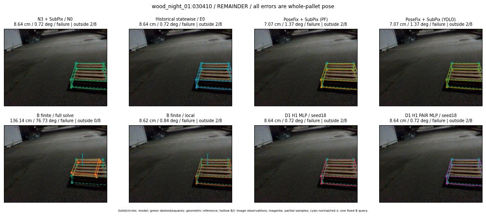

Whole-pallet pose errors; reference is a fixed geometric annotation, not certified physical GT.

Scores are uncalibrated logits. N0 retention is a numerical pose alias; it differs from H0 none or B fallback. B/I and profiles in baseline/B panels are original observations; L panels use new D1 observations. Only one deterministic supported B query is shown in a thumbnail; full support counts are below. Grey privacy rectangles edit the display copy only and are unrelated to O states; all observations were measured on original pixels. Thumbnails use JPEG quality85; detailed scientific panels are PNG.
| Method | Whole pose / cm, deg | Actual source | Selected ID | Score | Archived candidates | Eligible | N0 retained | H0 none | Fallback | Finite profiles |
|---|---|---|---|---|---|---|---|---|---|---|
| Raw YOLO + F | 7.58 cm / 0.62 deg / failure | OTHER | None | N/A | N/A | N/A | False | N/A | None | N/A |
| N3 + SubPix / N0 | 8.64 cm / 0.72 deg / failure | N0 | None | N/A | N/A | N/A | True | N/A | None | N/A |
| Historical statewise / E0 | 8.64 cm / 0.72 deg / failure | N0 | None | N/A | N/A | N/A | True | N/A | True | N/A |
| PoseFix raw | 6.87 cm / 0.99 deg / failure | OTHER | None | N/A | N/A | N/A | False | N/A | None | N/A |
| PoseFix + SubPix (PF) | 7.07 cm / 1.37 deg / failure | OTHER | None | N/A | N/A | N/A | False | N/A | False | historical support records 9; finite audit N/A |
| PoseFix + SubPix (YOLO) | 7.07 cm / 1.37 deg / failure | OTHER | None | N/A | N/A | N/A | False | N/A | False | historical support records 9; finite audit N/A |
| Historical L, seed18 | 8.64 cm / 0.72 deg / failure | N0 | N0 | N/A | 37 | 37 | True | True | True | N/A |
| Historical B fixed bank | 8.64 cm / 0.72 deg / failure | N0 | G10/ORIGINAL_WD/published_actual_pose | N/A | N/A | N/A | True | N/A | False | N/A |
| Historical B full | 96.88 cm / 4.48 deg / failure | OTHER | NEW/B/ORIGINAL_WD/h0/G10/ORIGINAL_WD/published_actual_pose/PROPOSED_NATIVE_YAW_0 | N/A | N/A | N/A | False | N/A | False | N/A |
| Historical edge full | 327.80 cm / 26.89 deg / failure | OTHER | NEW/edge/ORIGINAL_WD/h1/G10/ORIGINAL_WD/published_actual_pose/PROPOSED_NATIVE_YAW_1 | N/A | N/A | N/A | False | N/A | False | N/A |
| Historical AB full | 96.88 cm / 4.48 deg / failure | OTHER | NEW/AB/ORIGINAL_WD/h0/G10/ORIGINAL_WD/published_actual_pose/PROPOSED_NATIVE_YAW_0 | N/A | N/A | N/A | False | N/A | False | N/A |
| B finite / fixed bank | 8.64 cm / 0.72 deg / failure | N0 | G10/ORIGINAL_WD/published_actual_pose | N/A | N/A | N/A | True | N/A | False | 8/8 |
| B finite / full solve | 136.14 cm / 76.73 deg / failure | OTHER | NEW_FINITE/B/SWAPPED_WD/h3/G10/ORIGINAL_WD/published_actual_pose/PROPOSED_NATIVE_YAW_3 | N/A | N/A | N/A | False | N/A | False | 8/8 |
| B finite / local | 8.62 cm / 0.84 deg / failure | OTHER | NEW_FINITE/B/ORIGINAL_WD/h0/N0_LOCAL_SAME_PHYSICAL_POSE/ORIGINAL_WD | N/A | N/A | N/A | False | N/A | False | 8/8 |
| Edge finite / full solve | 18.66 cm / 16.10 deg / failure | OTHER | NEW_FINITE/edge/ORIGINAL_WD/h0/G10/ORIGINAL_WD/published_actual_pose/PROPOSED_NATIVE_YAW_0 | N/A | N/A | N/A | False | N/A | False | 8/8 |
| D0 H0 MLP / seed18 | 8.64 cm / 0.72 deg / failure | N0 | N0 | -1.0481793880462646 | 1 | 1 | True | True | True | N/A |
| D0 H0 MLP / seed19 | 8.64 cm / 0.72 deg / failure | N0 | N0 | 0.06081586331129074 | 1 | 1 | True | True | True | N/A |
| D0 H0 MLP / seed20 | 8.64 cm / 0.72 deg / failure | N0 | N0 | -2.448490619659424 | 1 | 1 | True | True | True | N/A |
| D0 H1 MLP / seed18 | 8.64 cm / 0.72 deg / failure | N0 | N0 | -2.5745811462402344 | 1 | 1 | True | False | False | N/A |
| D0 H1 MLP / seed19 | 8.64 cm / 0.72 deg / failure | N0 | N0 | -3.471708059310913 | 1 | 1 | True | False | False | N/A |
| D0 H1 MLP / seed20 | 8.64 cm / 0.72 deg / failure | N0 | N0 | -2.8606605529785156 | 1 | 1 | True | False | False | N/A |
| D1 H0 MLP / seed18 | 8.64 cm / 0.72 deg / failure | N0 | N0 | 2.364501953125 | 1 | 1 | True | True | True | N/A |
| D1 H0 MLP / seed19 | 8.64 cm / 0.72 deg / failure | N0 | N0 | 0.3264756202697754 | 1 | 1 | True | True | True | N/A |
| D1 H0 MLP / seed20 | 8.64 cm / 0.72 deg / failure | N0 | N0 | 0.3539329767227173 | 1 | 1 | True | True | True | N/A |
| D1 H1 MLP / seed18 | 8.64 cm / 0.72 deg / failure | N0 | N0 | -1.169523000717163 | 1 | 1 | True | False | False | N/A |
| D1 H1 MLP / seed19 | 8.64 cm / 0.72 deg / failure | N0 | N0 | -1.1359540224075317 | 1 | 1 | True | False | False | N/A |
| D1 H1 MLP / seed20 | 8.64 cm / 0.72 deg / failure | N0 | N0 | -0.9130499362945557 | 1 | 1 | True | False | False | N/A |
| D1 H1 ROLE AFFINE / seed18 | 8.64 cm / 0.72 deg / failure | N0 | N0 | -0.5013484954833984 | 1 | 1 | True | False | False | N/A |
| D1 H1 ROLE AFFINE / seed19 | 8.64 cm / 0.72 deg / failure | N0 | N0 | -0.17779149115085602 | 1 | 1 | True | False | False | N/A |
| D1 H1 ROLE AFFINE / seed20 | 8.64 cm / 0.72 deg / failure | N0 | N0 | -0.29664433002471924 | 1 | 1 | True | False | False | N/A |
| D1 H1 PAIR MLP / seed18 | 8.64 cm / 0.72 deg / failure | N0 | N0 | -0.5882484316825867 | 1 | 1 | True | False | False | N/A |
| D1 H1 PAIR MLP / seed19 | 8.64 cm / 0.72 deg / failure | N0 | N0 | -0.8344494104385376 | 1 | 1 | True | False | False | N/A |
| D1 H1 PAIR MLP / seed20 | 8.64 cm / 0.72 deg / failure | N0 | N0 | -0.6969974040985107 | 1 | 1 | True | False | False | N/A |
| D1 H1 PAIR ROLE AFFINE / seed18 | 8.64 cm / 0.72 deg / failure | N0 | N0 | -0.2882162034511566 | 1 | 1 | True | False | False | N/A |
| D1 H1 PAIR ROLE AFFINE / seed19 | 8.64 cm / 0.72 deg / failure | N0 | N0 | -0.4574381709098816 | 1 | 1 | True | False | False | N/A |
| D1 H1 PAIR ROLE AFFINE / seed20 | 8.64 cm / 0.72 deg / failure | N0 | N0 | -0.27130448818206787 | 1 | 1 | True | False | False | N/A |
| Regenerated common E0 | 8.64 cm / 0.72 deg / failure | N0 | E0_REGENERATED | N/A | N/A | N/A | True | N/A | True | N/A |